Odysseus fight backgrounds (v3 ink-and-wash style)
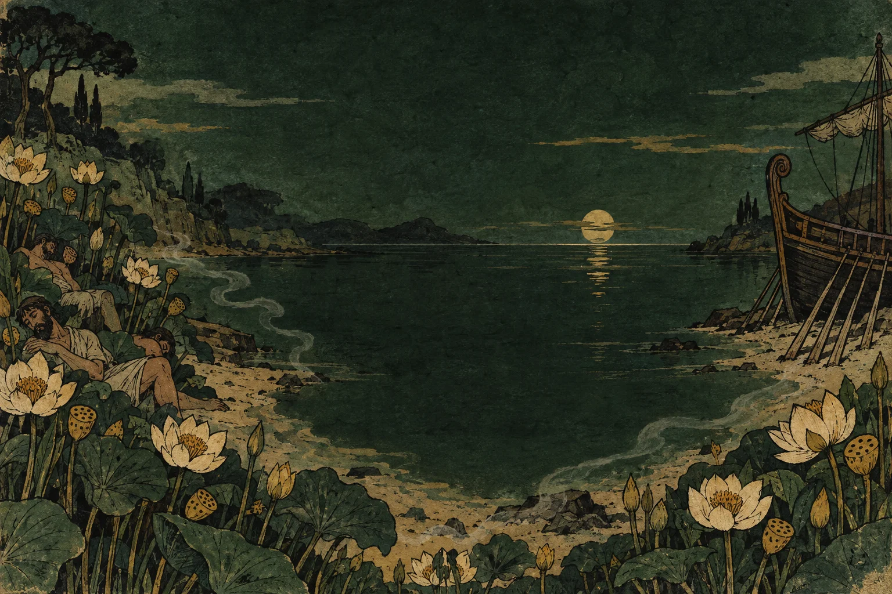
The Lotus-Eaters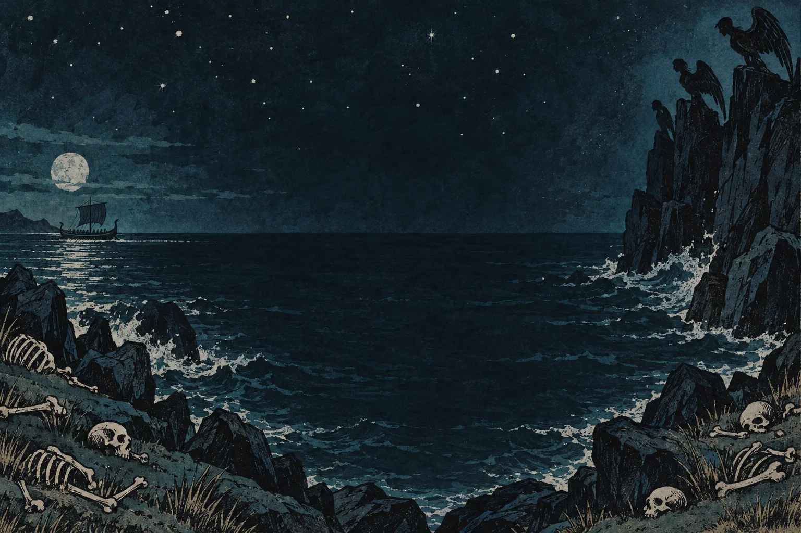
The Sirens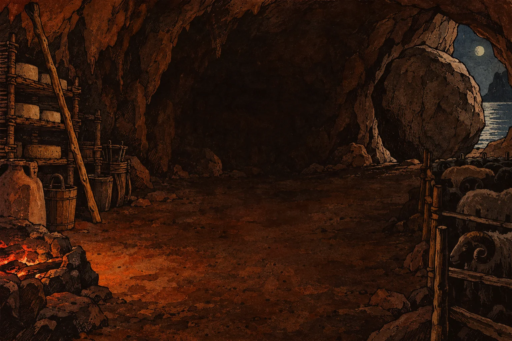
Polyphemus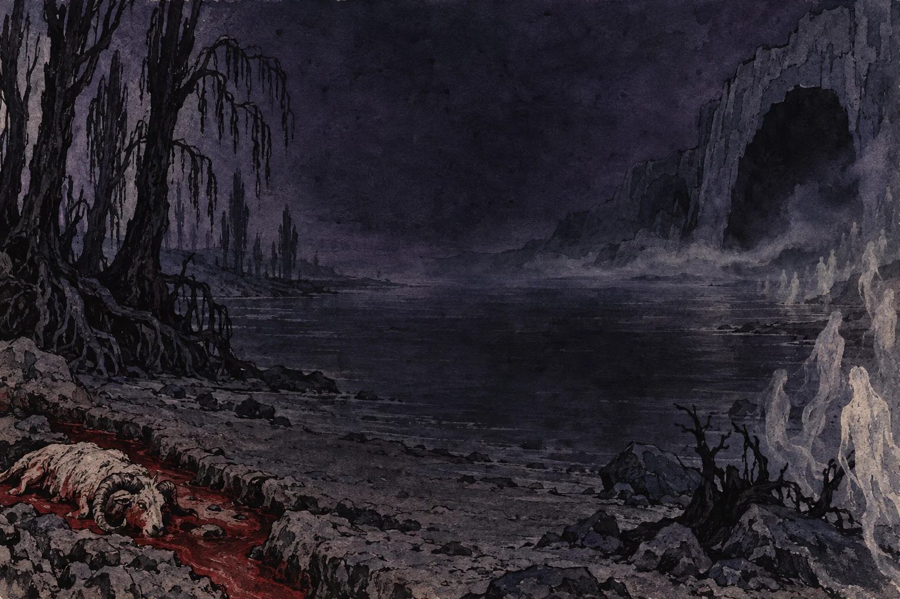
The Shades of Hades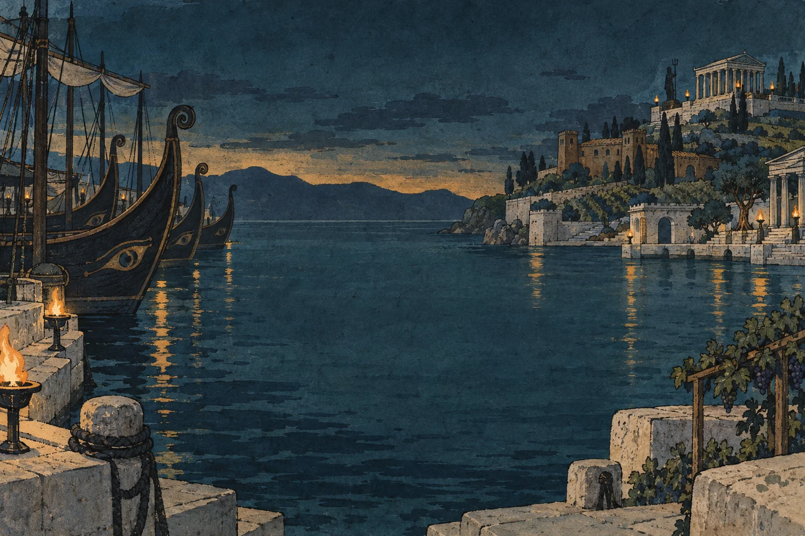
The Phaeacians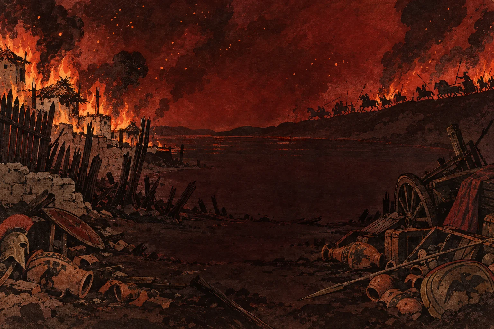
The Cicones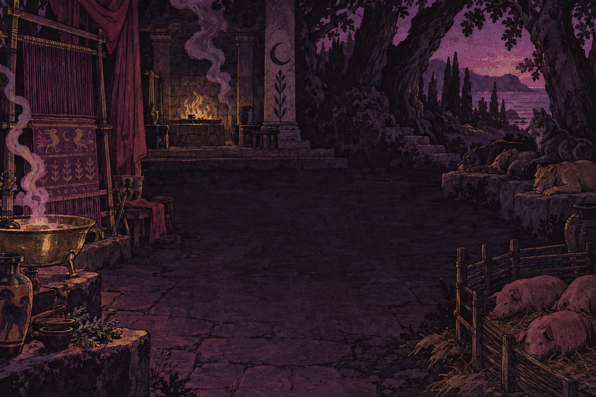
Circe, Witch of Aeaea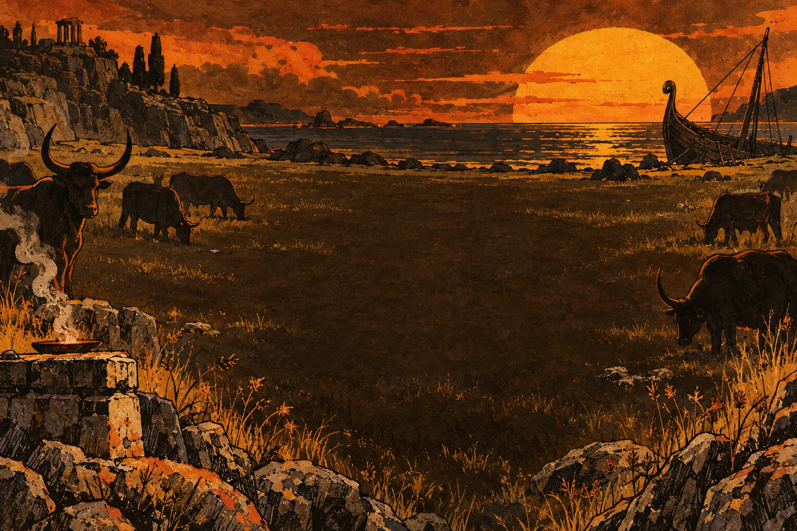
Cattle of the Sun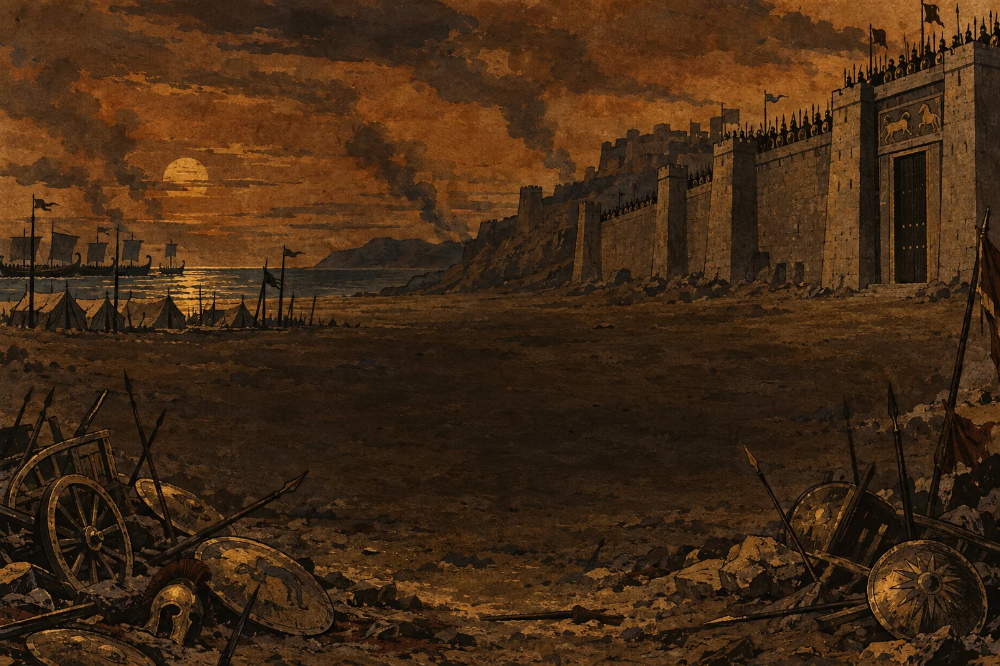
Hector, Tamer of Horses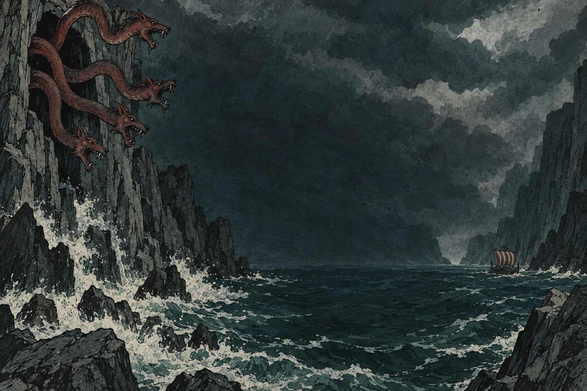
Scylla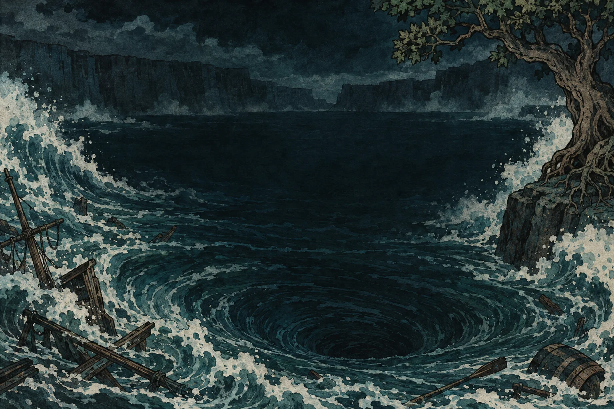
Charybdis